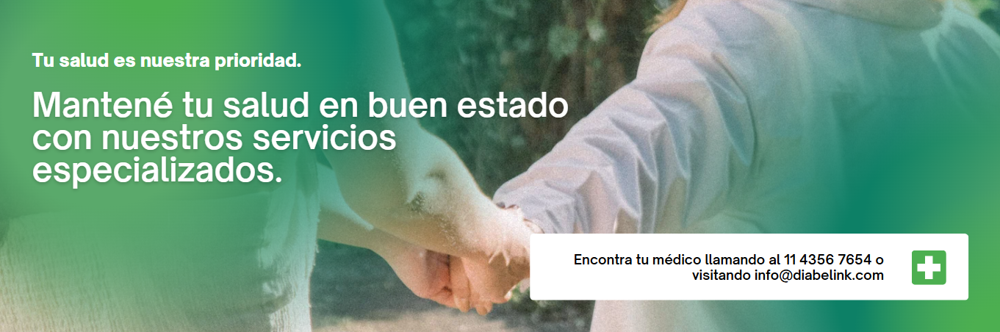

Este portal web de teleconsulta aborda la problemática de la alta demanda de turnos en el Hospital Mercante para pacientes diabéticos, facilitando un diagnóstico temprano, previniendo el desarrollo de complicaciones y otras enfermedades asociadas, y ofreciendo un tratamiento adecuado y personalizado para cada paciente. El portal cuenta con secciones como consejos que ayudan al paciente diabético a mantener una vida saludable, trámites a realizar y control de sus visitas médicas.
¿No tienes una cuenta? Regístrate aquí
Bienvenido al área de ingreso de DiabeLink. Aquí, los pacientes pueden acceder a sus consultas, revisar el historial de visitas y recibir atención personalizada. El portal facilita el seguimiento de la salud, ofreciendo un entorno seguro y accesible para gestionar sus citas, consultas y el plan de tratamiento.
Inicie sesión para acceder a recursos útiles, tramitar solicitudes y llevar un control detallado de su estado de salud.